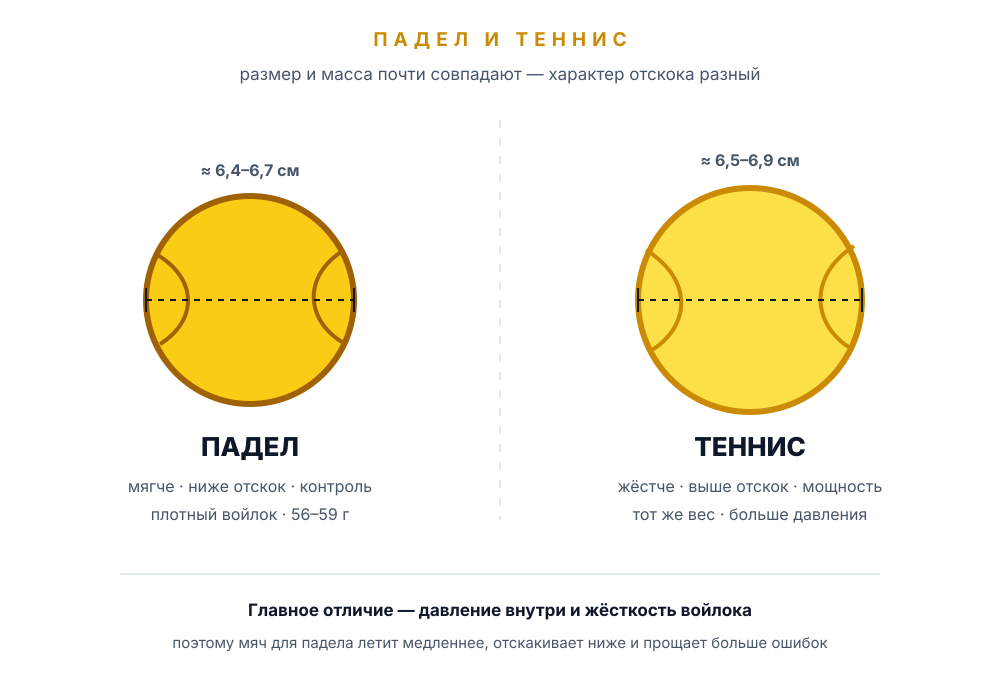

Мячи для падела
Мяч для падела выглядит как теннисный, но ведёт себя иначе: он мягче, медленнее и ниже отскакивает. Разбираем устройство мяча, его отличия от теннисного, категории по скорости и признаки, что мяч пора менять.
Как устроен мяч для падела
Мяч для падела — это полое резиновое или синтетическое ядро, накачанное воздухом, поверх которого наклеен войлок. Конструкция та же, что у теннисного мяча, поэтому внешне они почти неразличимы: похожий размер, тот же жёлтый цвет и характерный шов «восьмёркой». Разница — в давлении внутри и в свойствах покрытия.
По размеру и массе мячи для падела и тенниса очень близки: диаметр примерно 6,4–6,7 см, вес — 56–59 г. Поэтому «на глаз» и «на руке» их почти невозможно различить — отличие проявляется в игре, когда мяч отскакивает от корта и от стекла.
Резина под давлением
Внутри — сжатый воздух, который и даёт отскок. Чем ниже давление, тем медленнее и мягче мяч.
Плотное покрытие
Войлок отвечает за сцепление с покрытием и вращение. У падел-мячей он плотнее и лучше держит истирание.
Склейка или сшивка
Шов — самое уязвимое место. Когда он расходится или войлок «лохматится», мяч теряет предсказуемость.
Около 6,5 см
Диаметр — примерно 6,4–6,7 см, масса — 56–59 г. Разброс между партиями у любительских мячей больше, чем кажется.
Жёлтый, белый, цветной
Для игры чаще берут жёлтые мячи: они лучше видны на фоне стекла и освещения. Цветные — для тренировок и детей.
Банка на 3 мяча
Стандарт — герметичная банка с тремя мячами. Давление в банке сохраняется, пока она закрыта.
Чем мяч для падела отличается от теннисного
Главные отличия не в размере, а в давлении и жёсткости. Мяч для падела накачан слабее и сделан так, чтобы лететь медленнее и отскакивать ниже. Это логично: корт в паделе меньше теннисного, а стеклянные стены возвращают мяч в игру — слишком быстрый отскок сделал бы розыгрыши неуправляемыми.

| Параметр | Мяч для падела | Теннисный мяч | Что это значит на корте |
|---|---|---|---|
| Давление | Ниже | Выше | Падел-мяч мягче, меньше «выстреливает» от ракетки и легче гасится. |
| Отскок | Ниже и медленнее | Выше и быстрее | Проще принимать мяч у стекла и строить длинный розыгрыш. |
| Скорость полёта | Умеренная | Высокая | На маленьком корте у вас больше времени на подготовку удара. |
| Войлок | Плотнее и жёстче | Мягче и пушистее | Падел-мяч дольше сохраняет форму и лучше ведёт себя при ударах о стекло. |
| Жёсткость на руку | Мягче | Жёстче | Меньше нагрузки на кисть и локоть, особенно на приёме. |
| Работа со стенами | Предсказуемая | Более хаотичная | Мяч реже «улетает» от стекла, его проще рассчитать. |
| Мощность удара | Ниже | Выше | В паделе сила удара зависит от техники и ракетки, а не только от мяча. |
Мягче — значит контроль, а не слабость
Мяч с пониженным давлением медленнее покидает ракетку и позже долетает до соперника. Для новичка это плюс: остаётся время развернуться, оценить положение у стены и выполнить удар технично. Для опытного игрока — возможность тоньше работать с вращением и направлением, а не полагаться на скорость.
Плотный войлок и стеклянные стены
В паделе мяч регулярно бьётся о стекло, металлическую сетку и синтетическое покрытие корта. Поэтому войлок делают плотнее: он меньше пушится и дольше сохраняет игровые свойства. Мягкий теннисный войлок в таких условиях быстро «распушается», и мяч начинает тормозить о воздух раньше времени.
Можно ли играть теннисным мячом
Технически — да, на любительском уровне так иногда делают. Но теннисный мяч отскакивает выше и быстрее, поэтому у стекла и в защите появляется больше ошибок, а розыгрыши становятся короче и нервнее. Для тренировки и корзины это допустимо, для матча и тем более турнира — нет: там нужен мяч для падела.
Категории мячей: скорость и условия
Как и в теннисе, производители делят падел-мячи по скорости. На банке можно встретить слова slow, medium, fast, control, pro или обозначение давления. Смысл один: подобрать мяч под температуру, высоту над уровнем моря и уровень игроков — чтобы розыгрыши не превращались ни в «ватные», ни в слишком быстрые.
| Тип | Когда использовать | Что почувствуете |
|---|---|---|
| Slow / Control | Холодная погода, игра на высоте, новички и детские группы | Мяч мягкий, отскок низкий, полёт медленный — больше времени на удар. |
| Medium | Универсальный вариант для большинства залов и кортов | Баланс скорости и контроля, предсказуемый отскок от стекла. |
| Fast / Pro | Жара, опытные игроки, турниры с быстрым покрытием | Плотнее и быстрее, выше отскок, мяч охотнее «летит» на смэше. |
| Pressureless | Тренировки, корзина, разминка, занятия с тренером | Живут в разы дольше, но ощущаются жёстче и отскакивают иначе. |
Отдельной строкой идут мячи для падел-тенниса и мини-падела — они мягче, легче и заметно медленнее. Взрослому на стандартном корте они не подойдут: игра станет вялой, а техника удара сформируется неправильно.
Сколько живёт мяч и как это заметить
Падел-мяч теряет давление и «лохматится». У любителя банка обычно держится одну–три игры, у активных игроков — один вечер. Профессионалы меняют мячи практически каждый матч, а на крупных турнирах — по регламенту. Признаки «мёртвого» мяча видны без приборов.
- Отскок ниже обычного. Отпустите мяч с высоты плеча: мёртвый мяч отскочит заметно ниже, чем в начале игры.
- Войлок распушился. Мяч стал пушистым, тяжёлым и быстрее тормозит в воздухе.
- Глухой звук. Удар звучит плоско, без характерного щелчка, а ракетка будто «вязнет».
- Потеря формы. Мяч заметно мягче на ощупь, продавливается пальцами, шов расходится.
- Непредсказуемый отскок от стекла. Мяч всё чаще «залипает» или улетает выше расчётного.
Как продлить жизнь мячам
Мячи портятся не только от игры, но и от условий хранения. Держите их в закрытой банке, не оставляйте надолго в машине, на солнце или у батареи: перегрев и перепад температур ускоряют потерю давления. Не играйте в дождь и по мокрому корту — намокший войлок теряет сцепление и быстрее разрушается. Мячи, которыми уже нельзя играть матч, отлично подходят для разминки, корзины и тренировки подачи.
Как выбрать мячи
Для большинства любительских игр достаточно одной банки качественных мячей средней скорости. Но несколько деталей помогут не переплатить и не разочароваться.
- Оцените условия. Закрытый зал, улица, жара или холод, высота над уровнем моря — от этого зависит выбор между slow, medium и fast.
- Начните со средних. Если не уверены, берите medium: они предсказуемы в большинстве ситуаций и подходят и новичкам, и опытным игрокам.
- Проверьте банку. Она должна быть герметичной, без вмятин: если крышка уже открывалась, давление могло уйти.
- Держите отдельную банку для тренировок. Мячи из корзины быстро «умирают» — не тратьте на них новые.
- Не покупайте впрок слишком много. Даже в закрытой банке мячи постепенно теряют свойства, поэтому запас на сезон лучше, чем на три года.
Сколько мячей брать на игру
Стандартной банки из трёх мячей хватает на один матч, но опытные игроки берут вторую банку в сумку: мяч может улететь за пределы корта, потеряться или лопнуть. На турнир или длинную игровую сессию берите минимум две банки — так вы не зависите от того, что найдётся в клубе.
Бренд и цена
Мячи выпускают почти все производители инвентаря для падела, включая Head, Wilson, Dunlop и Bullpadel. Дорогие модели из «профессиональных» линеек обычно плотнее и стабильнее по качеству от банки к банке, но для любительской игры разница не критична. Дешёвые безымянные мячи чаще страдают от разброса давления и веса: одна банка может вести себя иначе, чем следующая.
Чек-лист перед покупкой
- Тип. На банке указано «padel», а не «paddle tennis».
- Скорость. Категория соответствует погоде, корту и уровню игроков.
- Упаковка. Банка герметична, без вмятин и следов вскрытия.
- Количество. Три мяча в банке, плюс запасная банка на матч.
- Внешний вид. Войлок ровный, без проплешин, шов целый, мяч упругий.
- Срок и условия. Мячи не лежали на витрине под солнцем годами.
Дальше — экипировка и игра
Мячи выбраны. Теперь к ракетке, правилам и первым ударам.